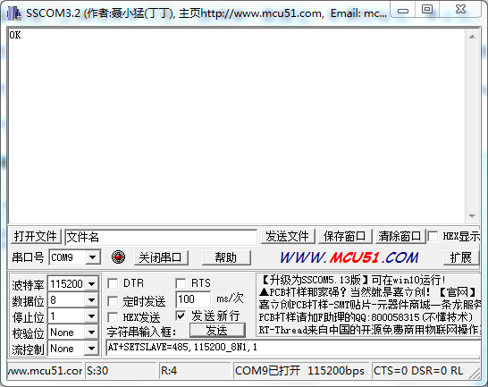

MODBUS 主从模式使用说明书¶
主从模式¶
智能数据采集仪 具备RS422（RS485）接口和RS232接口的主从模式切换功能。
主模式下，采集仪通过RS422接口或RS232接口连接外部传感器，可以利用脚本中的rs422_send、modbus_send、rs232_send函数对传感器数据进行读取。
从模式下，采集仪通过RS422接口或RS232接口连接PC。使用串口AT命令，可以选择使用RS422或者RS232接口中的一种方式。PC端上位机（比如Modbus Poll）可以通过Modbus RTU协议对采集上的数据（脚本最后一次执行保存的数据）进行读取。从模式下，对应选择接口的主模式函数（rs422_send、modbus_send、rs232_send函数）失效。
注解
目前仅支持 RS422接口 从模式功能。
模式切换和设置¶
主模式¶
利用串口或者上位机输入AT命令对基站式采集仪进行设置，以串口助手进行设置为例，首先打开串口助手，进行设备连接（正确选择串口号），波特率、数据位、奇偶校验位、停止位。并选择发送新行，打开串口。
在串口助手发送区输入
AT+SETSLAVE=none,115200_8N1,1命令进入主模式，然后点击【发送】按钮，在接收区返回OK表示设置成功。其中none代表主模式、115200代表波特率、8代表数据位、N代表奇偶校验位、1代表停止位，最后的1是代表地址。主模式下，波特率和地址无效。
在串口助手发送区输入AT+GETSLAVE=? 命令可以得到当前设置状态，点击【发送】按钮进行发送。
从模式¶
利用串口或者上位机输入AT命令对基站式采集仪进行设置。以串口助手进行设置为例，首先打开串口助手，进行设备连接（正确选择串口号），波特率、数据位、奇偶校验位、停止位。在串口助手底部输入
AT+SETSLAVE=485,115200_8N1,1命令进入从模式，然后点击【发送】按钮，在接收区返回OK表示设置成功。其中485代表使用RS485的从模式、115200代表波特率、8代表数据位、N代表奇偶校验位、1代表停止位，最后的1是代表Modbus总线地址。此时重启设备，出现嘀的一声后，会连续嘀嘀响，说明设备已经进入从模式。
在串口助手发送区输入AT+GETSLAVE=? 命令可以得到当前设置状态，点击【发送】按钮发送。